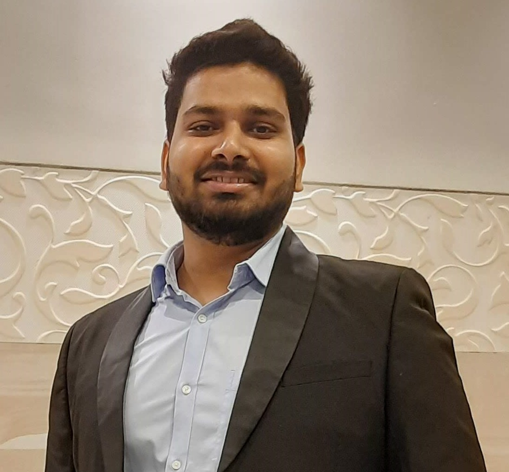

Himanshu Vishwakarma
PhD Researcher · Robert Bosch Centre for Cyber-Physical Systems · Indian Institute of Science, Bangalore
I am a doctoral researcher at the Robert Bosch Centre for Cyber-Physical Systems, Indian Institute of Science (IISc), working in the Intelligent Inclusive Interaction Design (I3D) Lab under Prof. Pradipta Biswas and Prof. Bharadwaj Amrutur. My PhD is supported by the Siemens Technology India PhD Fellowship (2022–2027).
My research focuses on making robots and immersive technologies accessible: eye-gaze controlled assistive robots for people with severe speech and motor impairment, immersive teleoperation for remote healthcare, multi-modal (LLM/VLM-based) human-robot interaction, and novel 3D display systems.
- 14 Peer-reviewed publications journal + conference
- 6 Journal articles 4 in Q1 journals
- 8 Conference papers ICRA, Ro-MAN, IUI, HCII
- 5 Patents 2 granted
Research Interests
Experience
- 2022 – Present PhD Researcher, I3D Lab, RBCCPS, Indian Institute of Science, Bengaluru
- May – Aug 2025 Research Intern, Siemens Technology India: multi-modal human-robot interaction using LLMs, VLMs and speech interfaces
- May – Aug 2023 Research Intern, Siemens Technology India: multi-threaded simulation frameworks for virtual environments
- 2021 – 2022 Junior Research Fellow, I3D Lab, Dept. of Design and Manufacturing, IISc: gaze-based robot control and remote healthcare robotics
- May – Jun 2020 Intern, TEQZO Retail Products Pvt. Ltd.: product design, user research and prototyping
- 2018 – 2019 Graduate Engineer Trainee, Raymond Limited
Education
- 2022 – Present Ph.D., Robert Bosch Centre for Cyber-Physical Systems, Indian Institute of Science, Bangalore
- 2019 – 2021 M.Des. in Product Design and Engineering, Indian Institute of Science, Bangalore (Honours)
- 2014 – 2018 B.Tech. in Textile Engineering, Dr. A.P.J. Abdul Kalam Technical University, Kanpur (Honours)
Highlights
- 2026Presented at HCII 2026, Montreal, Canada
- 2025IEEE RAS Travel Grant (USD 2,000) to attend ICRA 2025, Atlanta
- 2023Granted Indian Patent No. 481398 for a medical-parameter monitoring system
- 2022Winner, Toycathon 2022 (Ministry of Education, Govt. of India)
- 2022Siemens Technology India PhD Fellowship
Contact
Intelligent Inclusive Interaction Design (I3D) Lab, Robert Bosch Centre for Cyber-Physical Systems,
Indian Institute of Science, Bengaluru 560012, India
Email: 1himanshu@iisc.ac.in